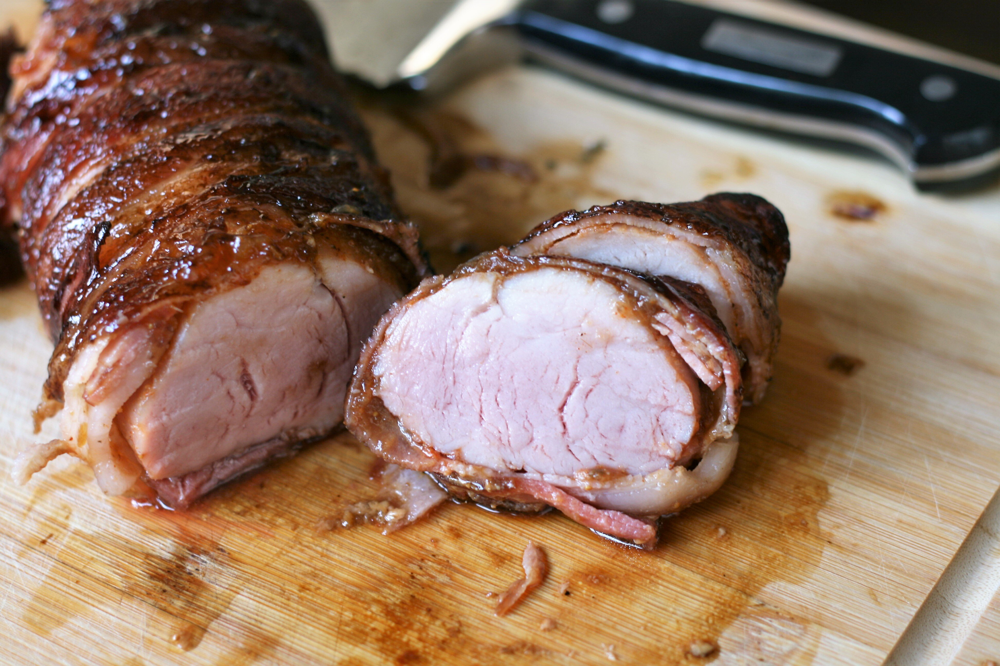

Bacon-wrapped Pork Tenderloin

Bacon-wrapped Pork Tenderloin with Balsamic and Fig
Adding fig preserves and balsamic vinegar to bacon-wrapped pork gives you the perfect sweet-salty combo of flavors that is impressive enough to serve guests. Best of all, it's ready in about 20 minutes. I love to serve this with roasted Brussels sprouts and mashed sweet potatoes. Do not use thick-cut bacon, as it will not cook thoroughly.
Ingredients
- 3/4 teaaspoon onion powder
- 3/4 teaspoon garlic powder
- 3/4 teaspoon smoked paprika
- 1/2 teaspoon salt
- 1/4 teaspoon black pepper
- 1 1/4 pounds pork tenderloin
Directions
- Combine onion powder, garlic powder, smoked paprika, salt, and pepper in a small bowl. Rub spice mixture all over the pork tenderloin and let sit at room temperature for 20 to 25 minutes.
- Preheat the oven to 400 degrees F (200 degrees C). Line a baking sheet with aluminum foil. Spray foil with cooking spray.
- On a clean work surface, lay bacon slices side by side, overlapping them slightly. Brush fig preserves on one side of the bacon. Place pork tenderloin on bottom end of the bacon slices and roll up so that tenderloin is wrapped in bacon. Place tenderloin, seam side down, on the prepared baking sheet.
- Roast in the preheated oven for 15 minutes and remove pork tenderloin from oven.
- Set an oven rack about 6 inches from the heat source and preheat the oven's broiler.
- Brush balsamic glaze all over the pork and return to the oven to broil until pork is slightly pink in the center, 5 to 7 more minutes. An instant-read thermometer inserted into the center should read at least 145 degrees F (63 degrees C). Let rest for 5 minutes before slicing and serving.